Fireweed
Epilobium angustifolium
Description: This plant grows up to 1.8 meters tall. It has large, showy, pink flowers and lance-shaped leaves. Its relative, the dwarf fireweed (Epilobium latifolium), grows 30 to 60 centimeters tall.
Habitat and Distribution: Tall fireweed is found in open woods, on hillsides, on stream banks, and near seashores in arctic regions. It is especially abundant in burned-over areas. Dwarf fireweed is found along streams, sandbars, and lakeshores and on alpine and arctic slopes.
Edible Parts: The leaves, stems, and flowers are edible in the spring but become tough in summer. You can split open the stems of old plants and eat the pith raw.

Fishtail palm
Caryota urens
Description: Fishtail palms are large trees, at least 18 meters tall. Their leaves are unlike those of any other palm; the leaflets are irregular and toothed on the upper margins. All other palms have either fan-shaped or featherlike leaves. Its massive flowering shoot is borne at the top of the tree and hangs downward.
Habitat and Distribution: The fishtail palm is native to the tropics of India, Assam, and Burma. Several related species also exist in Southeast Asia and the Philippines.
These palms are found in open hill country and jungle areas.
Edible Parts: The chief food in this palm is the starch stored in large quantities in its trunk. The juice from the fishtail palm is very nourishing and you have to drink it shortly after getting it from the palm flower shoot. Boil the juice down to get a rich sugar syrup. Use the same method as for the sugar palm to get the juice. The palm cabbage may be eaten raw or cooked.

Foxtail grass
Setaria species
Description: This weedy grass is readily recognized by the narrow, cylindrical head containing long hairs. Its grains are small, less than 6 millimeters long. The dense heads of grain often droop when ripe.
Habitat and Distribution: Look for foxtail grasses in open, sunny areas, along roads, and at the margins of fields. Some species occur in wet, marshy areas. Species of
Setaria are found throughout the United States, Europe, western Asia, and tropical
Africa. In some parts of the world, foxtail grasses are grown as a food crop.
Edible Parts: The grains are edible raw but are very hard and sometimes bitter.
Boiling removes some of the bitterness and makes them easier to eat.

Goa bean
Psophocarpus tetragonolobus
Description: The goa bean is a climbing plant that may cover small shrubs and trees.
Its bean pods are 22 centimeters long, its leaves 15 centimeters long, and its flowers are bright blue. The mature pods are 4-angled, with jagged wings on the pods.
Habitat and Distribution: This plant grows in tropical Africa, Asia, the East Indies, the
Philippines, and Taiwan. This member of the bean (legume) family serves to illustrate a kind of edible bean common in the tropics of the Old World. Wild edible beans of this sort are most frequently found in clearings and around abandoned garden sites.
They are more rare in forested areas.
Edible Parts: You can eat the young pods like string beans. The mature seeds are a valuable source of protein after parching or roasting them over hot coals. You can germinate the seeds (as you can many kinds of beans) in damp moss and eat the resultant sprouts. The thickened roots are edible raw. They are slightly sweet, with the firmness of an apple. You can also eat the young leaves as a vegetable, raw or steamed.
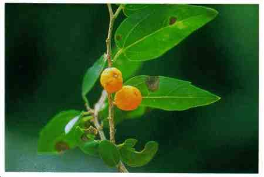
Hackberry
Celtis species
Description: Hackberry trees have smooth, gray bark that often has corky warts or ridges. The tree may reach 39 meters in height. Hackberry trees have long-pointed leaves that grow in two rows. This tree bears small, round berries that can be eaten when they are ripe and fall from the tree. The wood of the hackberry is yellowish.
Habitat and Distribution: This plant is widespread in the United States, especially in and near ponds.
Edible Parts: Its berries are edible when they are ripe and fall from the tree.
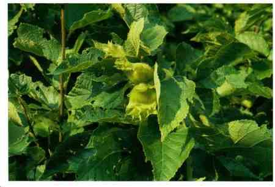
Hazelnut or wild filbert
Corylus species
Description: Hazelnuts grow on bushes 1.8 to 3.6 meters high. One species in Turkey and another in China are large trees. The nut itself grows in a very bristly husk that conspicuously contracts above the nut into a long neck. The different species vary in this respect as to size and shape.
Habitat and Distribution: Hazelnuts are found over wide areas in the United States, especially the eastern half of the country and along the Pacific coast. These nuts are also found in Europe where they are known as filberts. The hazelnut is common in
Asia, especially in eastern Asia from the Himalayas to China and Japan. The hazelnut usually grows in the dense thickets along stream banks and open places. They are not plants of the dense forest.
Edible Parts: Hazelnuts ripen in the autumn when you can crack them open and eat the kernel. The dried nut is extremely delicious. The nut's high oil content makes it a good survival food. In the unripe stage, you can crack them open and eat the fresh kernel.
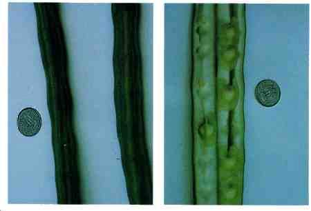
Horseradish tree
Moringa pterygosperma
Description: This tree grows from 4.5 to 14 meters tall. Its leaves have a fernlike appearance. Its flowers and long, pendulous fruits grow on the ends of the branches.
Its fruit (pod) looks like a giant bean. Its 25-to 60-centimeter-long pods are triangular in cross section, with strong ribs. Its roots have a pungent odor.
Habitat and Distribution: This tree is found in the rain forests and semievergreen seasonal forests of the tropical regions. It is widespread in India, Southeast Asia,
Africa, and Central America. Look for it in abandoned fields and gardens and at the edges of forests.
Edible Parts: The leaves are edible raw or cooked, depending on their hardness. Cut the young seedpods into short lengths and cook them like string beans or fry them.
You can get oil for frying by boiling the young fruits of palms and skimming the oil off the surface of the water. You can eat the flowers as part of a salad. You can chew fresh, young seedpods to eat the pulpy and soft seeds. The roots may be ground as a substitute for seasoning similar to horseradish.
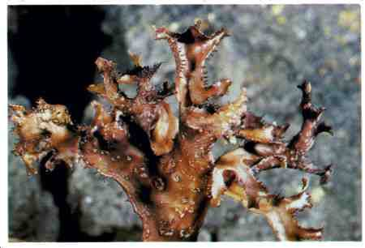
Iceland moss
Cetraria islandica
Description: This moss grows only a few inches high. Its color may be gray, white, or even reddish.
Habitat and Distribution: Look for it in open areas. It is found only in the arctic.
Edible Parts: All parts of the Iceland moss are edible. During the winter or dry season, it is dry and crunchy but softens when soaked. Boil the moss to remove the bitterness. After boiling, eat by itself or add to milk or grains as a thickening agent.
Dried plants store well.
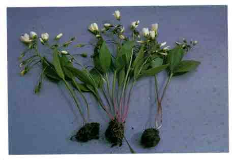
Indian potato or Eskimo potato
Claytonia species
Description: All Claytonia species are somewhat fleshy plants only a few centimeters tall, with showy flowers about 2.5 centimeters across.
Habitat and Distribution: Some species are found in rich forests where they are conspicuous before the leaves develop. Western species are found throughout most of the northern United States and in Canada.
Edible Parts: The tubers are edible but you should boil them before eating.

Juniper
Juniperus species
Description: Junipers, sometimes called cedars, are trees or shrubs with very small, scalelike leaves densely crowded around the branches. Each leaf is less than 1.2 centimeters long. All species have a distinct aroma resembling the well-known cedar.
The berrylike cones are usually blue and covered with a whitish wax.
Habitat and Distribution: Look for junipers in open, dry, sunny areas throughout
North America and northern Europe. Some species are found in southeastern Europe, across Asia to Japan, and in the mountains of North Africa.
Edible Parts: The berries and twigs are edible. Eat the berries raw or roast the seeds to use as a coffee substitute. Use dried and crushed berries as a seasoning for meat.
Gather young twigs to make a tea.
Many plants may be called cedars but are not related to junipers and may be harmful.
Always look for the berrylike structures, needle leaves, and resinous, fragrant sap to be sure the plant you have is a juniper.
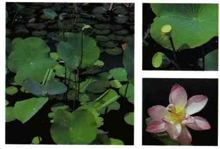
Lotus
Nelumbo species
Description: There are two species of lotus: one has yellow flowers and the other pink flowers. The flowers are large and showy. The leaves, which may float on or rise above the surface of the water, often reach 1.5 meters in radius. The fruit has a distinctive flattened shape and contains up to 20 hard seeds.
Habitat and Distribution: The yellow-flowered lotus is native to North America. The pink-flowered species, which is widespread in the Orient, is planted in many other areas of the world. Lotuses are found in quiet fresh water.
Edible Parts: All parts of the plant are edible raw or cooked. The underwater parts contain large quantities of starch. Dig the fleshy portions from the mud and bake or boil them. Boil the young leaves and eat them as a vegetable. The seeds have a pleasant flavor and are nutritious. Eat them raw, or parch and grind them into flour.

Malanga
Xanthosoma caracu
Description: This plant has soft, arrow-shaped leaves, up to 60 centimeters long. The leaves have no aboveground stems.
Habitat and Distribution: This plant grows widely in the Caribbean region. Look for it in open, sunny fields.
Edible Parts: The tubers are rich in starch. Cook them before eating to destroy a poison contained in all parts of the plant.
WARNING
Always cook before eating.

Mango
Mangifera indica
Description: This tree may reach 30 meters in height. It has alternate, simple, shiny, dark green leaves. Its flowers are small and inconspicuous. Its fruits have a large single seed. There are many cultivated varieties of mango. Some have red flesh, others yellow or orange, often with many fibers and a kerosene taste.
Habitat and Distribution: This tree grows in warm, moist regions. It is native to northern India, Burma, and western Malaysia. It is now grown throughout the tropics.
Edible Parts: The fruits area nutritious food source. The unripe fruit can be peeled and its flesh eaten by shredding it and eating it like a salad. The ripe fruit can be peeled and eaten raw. Roasted seed kernels are edible.
If you are sensitive to poison ivy, avoid eating mangoes, as they cause a severe reaction in sensitive individuals.

Manioc
Manihot utillissima
Description: Manioc is a perennial shrubby plant, 1 to 3 meters tall, with jointed stems and deep green, fingerlike leaves. It has large, fleshy rootstocks.
Habitat and Distribution: Manioc is widespread in all tropical climates, particularly in moist areas. Although cultivated extensively, it maybe found in abandoned gardens and growing wild in many areas.
Edible Parts: The rootstocks are full of starch and high in food value. Two kinds of manioc are known: bitter and sweet. Both are edible. The bitter type contains poisonous hydrocyanic acid. To prepare manioc, first grind the fresh manioc root into a pulp, then cook it for at least 1 hour to remove the bitter poison from the roots.
Then flatten the pulp into cakes and bake as bread. Manioc cakes or flour will keep almost indefinitely if protected against insects and dampness. Wrap them in banana leaves for protection.
For safety, always cook the roots of either type.
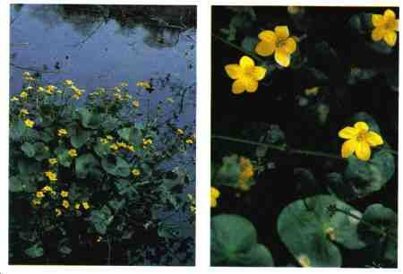
Marsh marigold
Caltha palustris
Description: This plant has rounded, dark green leaves arising from a short stem. It has bright yellow flowers.
Habitat and Distribution: This plant is found in bogs, lakes, and slow-moving streams.
It is abundant in arctic and subarctic regions and in much of the eastern region of the northern United States.
Edible Parts: All parts are edible if boiled.
As with all water plants, do not eat this plant raw. Raw water plants may carry dangerous organisms that are removed only by cooking.

Mulberry
Morus species
Description: This tree has alternate, simple, often lobed leaves with rough surfaces.
Its fruits are blue or black and many seeded.
Habitat and Distribution: Mulberry trees are found in forests, along roadsides, and in abandoned fields in Temperate and Tropical Zones of North America, South America,
Europe, Asia, and Africa.
Edible Parts: The fruit is edible raw or cooked. It can be dried for eating later.
When eaten in quantity, mulberry fruit acts as a laxative. Green, unripe fruit can be hallucinogenic and cause extreme nausea and cramps.
Other Uses: You can shred the inner bark of the tree and use it to make twine or cord.
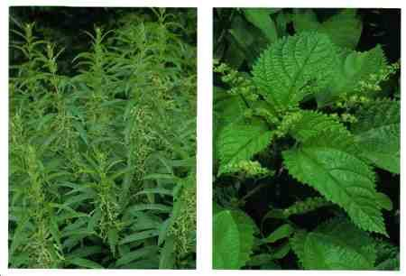
Nettle
Urtica and Laportea species
Description: These plants grow several feet high. They have small, inconspicuous flowers. Fine, hairlike bristles cover the stems, leafstalks, and undersides of leaves.
The bristles cause a stinging sensation when they touch the skin.
Habitat and Distribution: Nettles prefer moist areas along streams or at the margins of forests. They are found throughout North America, Central America, the Caribbean, and northern Europe.
Edible Parts: Young shoots and leaves are edible. Boiling the plant for 10 to 15 minutes destroys the stinging element of the bristles. This plant is very nutritious.
Other Uses: Mature stems have a fibrous layer that you can divide into individual fibers and use to weave string or twine.
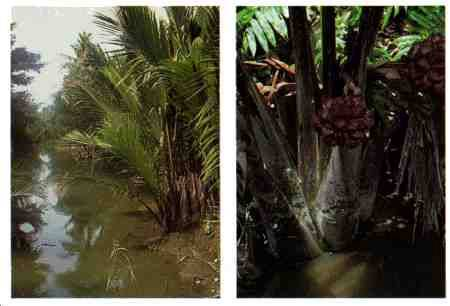
Nipa palm
Nipa fruticans
Description: This palm has a short, mainly underground trunk and very large, erect leaves up to 6 meters tall. The leaves are divided into leaflets. A flowering head forms on a short erect stern that rises among the palm leaves. The fruiting (seed)
head is dark brown and may be 30 centimeters in diameter.
Habitat and Distribution: This palm is common on muddy shores in coastal regions throughout eastern Asia.
Edible Parts: The young flower stalk and the seeds provide a good source of water and food. Cut the flower stalk and collect the juice. The juice is rich in sugar. The seeds are hard but edible.
Other Uses: The leaves are excellent as thatch and coarse weaving material.
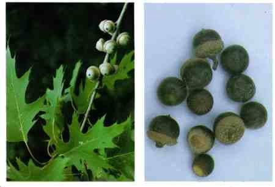
Oak
Quercus species
Description: Oak trees have alternate leaves and acorn fruits. There are two main groups of oaks: red and white. The red oak group has leaves with bristles and smooth bark in the upper part of the tree. Red oak acorns take 2 years to mature. The white oak group has leaves without bristles and a rough bark in the upper portion of the tree. White oak acorns mature in 1 year. Habitat and Distribution: Oak trees are found in many habitats throughout North America, Central America, and parts of
Europe and Asia. Edible Parts: All parts are edible, but often contain large quantities of bitter substances. White oak acorns usually have a better flavor than red oak acorns. Gather and shell the acorns. Soak red oak acorns in water for 1 to 2 days to remove the bitter substance. You can speed up this process by putting wood ashes in the water in which you soak the acorns. Boil the acorns or grind them into flour and use the flour for baking. You can use acorns that you baked until very dark as a coffee substitute.
Tannic acid gives the acorns their bitter taste. Eating an excessive amount of acorns high in tannic acid can lead to kidney failure. Before eating acorns, leach out this chemical.
Other Uses: Oak wood is excellent for building or burning. Small oaks can be split and cut into long thin strips (3 to 6 millimeters thick and 1.2 centimeters wide) used to weave mats, baskets, or frameworks for packs, sleds, furniture, etc. Oak bark soaked in water produces a tanning solution used to preserve leather.
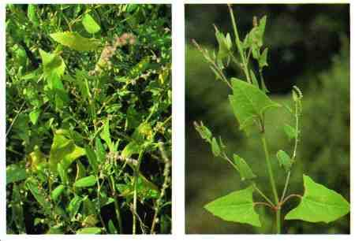
Orach
Atriplex species
Description: This plant is vinelike in growth and has arrowhead-shaped, alternate leaves up to 5 cenitmeters long. Young leaves maybe silver-colored. Its flowers and fruits are small and inconspicuous.
Habitat and Distribution: Orach species are entirety restricted to salty soils. They are found along North America's coasts and on the shores of alkaline lakes inland. They are also found along seashores from the Mediterranean countries to inland areas in
North Africa and eastward to Turkey and central Siberia.
Edible Parts: The entire plant is edible raw or boiled.

Palmetto palm
Sabal palmetto
Description: The palmetto palm is a tall, unbranched tree with persistent leaf bases on most of the trunk. The leaves are large, simple, and palmately lobed. Its fruits are dark blue or black with a hard seed.
Habitat and Distribution: The palmetto palm is found throughout the coastal regions of the southeastern United States.
Edible Parts: The fruits are edible raw. The hard seeds may be ground into flour. The heart of the palm is a nutritious food source at any time. Cut off the top of the tree to obtain the palm heart.
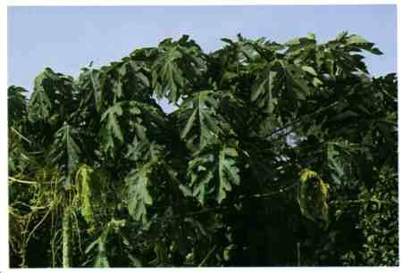
Papaya or pawpaw
Carica papaya
Description: The papaya is a small tree 1.8 to 6 meters tall, with a soft, hollow trunk.
When cut, the entire plant exudes a milky juice. The trunk is rough and the leaves are crowded at the trunk's apex. The fruit grows directly from the trunk, among and below the leaves. The fruit is green before ripening. When ripe, it turns yellow or remains greenish with a squashlike appearance.
Habitat and Distribution: Papaya is found in rain forests and semievergreen seasonal forests in tropical regions and in some temperate regions as well. Look for it in moist areas near clearings and former habitations. It is also found in open, sunny places in uninhabited jungle areas.
Edible Parts: The ripe fruit is high in vitamin C. Eat it raw or cock it like squash.
Place green fruit in the sun to make it ripen quickly. Cook the young papaya leaves, flowers, and stems carefully, changing the water as for taro.
Be careful not to get the milky sap from the unripe fruit into your eyes. It will cause intense pain and temporary--sometimes even permanent--blindness.
Other Uses: Use the milky juice of the unripe fruit to tenderize tough meat. Rub the juice on the meat.
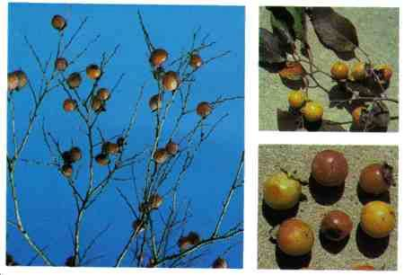
Persimmon
Diospyros virginiana and other species
Description: These trees have alternate, dark green, elliptic leaves with entire margins. The flowers are inconspicuous. The fruits are orange, have a sticky consistency, and have several seeds.
Habitat and Distribution: The persimmon is a common forest margin tree. It is wide spread in Africa, eastern North America, and the Far East.
Edible Parts: The leaves are a good source of vitamin C. The fruits are edible raw or baked. To make tea, dry the leaves and soak them in hot water. You can eat the roasted seeds.
Some persons are unable to digest persimmon pulp. Unripe persimmons are highly astringent and inedible.

Pincushion cactus
Mammilaria species
Description: Members of this cactus group are round, short, barrel-shaped, and without leaves. Sharp spines cover the entire plant.
Habitat and Distribution: These cacti are found throughout much of the desert regions of the western United States and parts of Central America.
Edible Parts: They are a good source of water in the desert.
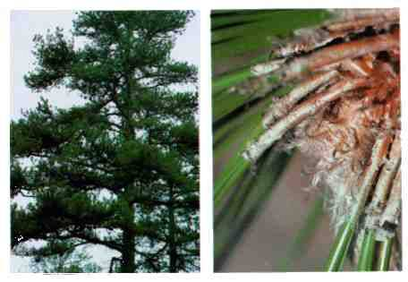
Pine
Pinus species
Description: Pine trees are easily recognized by their needlelike leaves grouped in bundles. Each bundle may contain one to five needles, the number varying among species. The tree's odor and sticky sap provide a simple way to distinguish pines from similar looking trees with needlelike leaves.
Habitat and Distribution: Pines prefer open, sunny areas. They are found throughout
North America, Central America, much of the Caribbean region, North Africa, the
Middle East, Europe, and some places in Asia.
Edible Parts: The seeds of all species are edible. You can collect the young male cones, which grow only in the spring, as a survival food. Boil or bake the young cones.
The bark of young twigs is edible. Peel off the bark of thin twigs. You can chew the juicy inner bark; it is rich in sugar and vitamins. Eat the seeds raw or cooked. Green pine needle tea is high in vitamin C. Other Uses: Use the resin to waterproof articles. Also use it as glue. Collect the resin from the tree. If there is not enough resin on the tree, cut a notch in the bark so more sap will seep out. Put the resin in a container and heat it. The hot resin is your glue. Use it as is or add a small amount of ash dust to strengthen it. Use it immediately. You can use hardened pine resin as an emergency dental filling.

Plantain, broad and narrow leaf
Plantago species
Description: The broad leaf plantain has leaves over 2.5 centimeters across that grow close to the ground. The flowers are on a spike that rises from the middle of the cluster of leaves. The narrow leaf plantain has leaves up to 12 centimeters long and
2.5 centimeters wide, covered with hairs. The leaves form a rosette. The flowers are small and inconspicuous.
Habitat and Distribution: Look for these plants in lawns and along roads in the North
Temperate Zone. This plant is a common weed throughout much of the world.
Edible Parts: The young tender leaves are edible raw. Older leaves should be cooked.
Seeds are edible raw or roasted.
Other Uses: To relieve pain from wounds and sores, wash and soak the entire plant for a short time and apply it to the injured area. To treat diarrhea, drink tea made from 28 grams (1 ounce) of the plant leaves boiled in 0.5 liter of water. The seeds and seed husks act as laxatives.
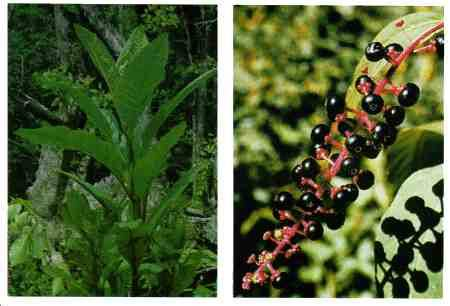
Pokeweed
Phytolacca americana
Description: This plant may grow as high as 3 meters. Its leaves are elliptic and up to
1 meter in length. It produces many large clusters of purple fruits in late spring.
Habitat and Distribution: Look for this plant in open, sunny areas in forest clearings, in fields, and along roadsides in eastern North America, Central America, and the
Caribbean.
Edible Parts: The young leaves and stems are edible cooked. Boil them twice, discarding the water from the first boiling. The fruits are edible if cooked.
All parts of this plant are poisonous if eaten raw. Never eat the underground portions of the plant as these contain the highest concentrations of the poisons. Do not eat any plant over 25 centimeters tall or when red is showing in the plant.
Other Uses: Use the juice of fresh berries as a dye.

Prickly pear cactus
Opuntia species
Description: This cactus has flat, padlike stems that are green. Many round, furry dots that contain sharp-pointed hairs cover these stems.
Habitat and Distribution: This cactus is found in arid and semiarid regions and in dry, sandy areas of wetter regions throughout most of the United States and Central and
South America. Some species are planted in arid and semiarid regions of other parts of the world.
Edible Parts: All parts of the plant are edible. Peel the fruits and eat them fresh or crush them to prepare a refreshing drink. Avoid the tiny, pointed hairs. Roast the seeds and grind them to a flour.
Avoid any prickly pear cactus like plant with milky sap.
Other Uses: The pad is a good source of water. Peel it carefully to remove all sharp hairs before putting it in your mouth. You can also use the pads to promote healing.
Split them and apply the pulp to wounds.
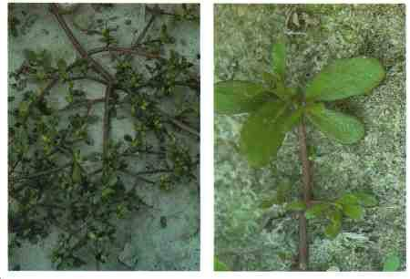
Purslane
Portulaca oleracea
Description: This plant grows close to the ground. It is seldom more than a few centimeters tall. Its stems and leaves are fleshy and often tinged with red. It has paddleshaped leaves, 2.5 centimeter or less long, clustered at the tips of the stems.
Its flowers are yellow or pink. Its seeds are tiny and black.
Habitat and Distribution: It grows in full sun in cultivated fields, field margins, and other weedy areas throughout the world.
Edible Parts: All parts are edible. Wash and boil the plants for a tasty vegetable or eat them raw. Use the seeds as a flour substitute or eat them raw.
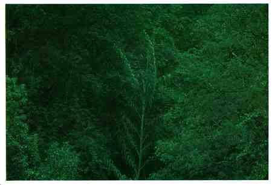
Rattan palm
Calamus species
Description: The rattan palm is a stout, robust climber. It has hooks on the midrib of its leaves that it uses to remain attached to trees on which it grows. Sometimes, mature stems grow to 90 meters. It has alternate, compound leaves and a whitish flower.
Habitat and Distribution: The rattan palm is found from tropical Africa through Asia to the East Indies and Australia. It grows mainly in rain forests.
Edible Parts: Rattan palms hold a considerable amount of starch in their young stem tips. You can eat them roasted or raw. In other kinds, a gelatinous pulp, either sweet or sour, surrounds the seeds. You can suck out this pulp. The palm heart is also edible raw or cooked.
Other Uses: You can obtain large amounts of potable water by cutting the ends of the long stems (see Chapter 6). The stems can be used to make baskets and fish traps.

Reed
Phragmites australis
Description: This tall, coarse grass grows to 3.5 meters tall and has gray-green leaves about 4 centimeters wide. It has large masses of brown flower branches in early summer. These rarely produce grain and become fluffy, gray masses late in the season.
Habitat and Distribution: Look for reed in any open, wet area, especially one that has been disturbed through dredging. Reed is found throughout the temperate regions of both the Northern and Southern Hemispheres.
Edible Parts: All parts of the plant are edible raw or cooked in any season. Harvest the stems as they emerge from the soil and boil them. You can also harvest them just before they produce flowers, then dry and beat them into flour. You can also dig up and boil the underground stems, but they are often tough. Seeds are edible raw or boiled, but they are rarely found.

Reindeer moss
Cladonia rangiferina
Description: Reindeer moss is a low-growing plant only a few centimeters tall. It does not flower but does produce bright red reproductive structures.
Habitat and Distribution: Look for this lichen in open, dry areas. It is very common in much of North America.
Edible Parts: The entire plant is edible but has a crunchy, brittle texture. Soak the plant in water with some wood ashes to remove the bitterness, then dry, crush, and add it to milk or to other food.
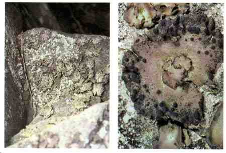
Rock tripe
Umbilicaria species
Description: This plant forms large patches with curling edges. The top of the plant is usually black. The underside is lighter in color.
Habitat and Distribution: Look on rocks and boulders for this plant. It is common throughout North America.
Edible Parts: The entire plant is edible. Scrape it off the rock and wash it to remove grit. The plant may be dry and crunchy; soak it in water until it becomes soft. Rock tripes may contain large quantities of bitter substances; soaking or boiling them in several changes of water will remove the bitterness.
There are some reports of poisoning from rock tripe, so apply the Universal Edibility
Test.
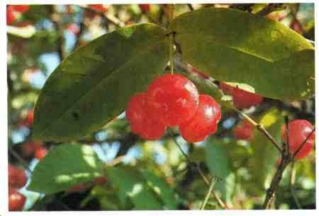
Rose apple
Eugenia jambos
Description: This tree grows 3 to 9 meters high. It has opposite, simple, dark green, shiny leaves. When fresh, it has fluffy, yellowish-green flowers and red to purple eggshaped fruit.
Habitat and Distribution: This tree is widely planted in all of the tropics. It can also be found in a semiwild state in thickets, waste places, and secondary forests.
Edible Parts: The entire fruit is edible raw or cooked.
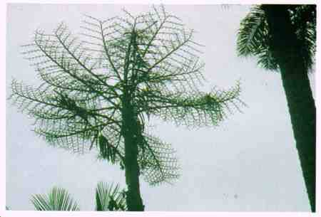
Sago palm
Metroxylon sagu
Description: These palms are low trees, rarely over 9 meters tall, with a stout, spiny trunk. The outer rind is about 5 centimeters thick and hard as bamboo. The rind encloses a spongy inner pith containing a high proportion of starch. It has typical palmlike leaves clustered at the tip.
Habitat and Distribution: Sago palm is found in tropical rain forests. It flourishes in damp lowlands in the Malay Peninsula, New Guinea, Indonesia, the Philippines, and adjacent islands. It is found mainly in swamps and along streams, lakes, and rivers.
Edible Parts: These palms, when available, are of great use to the survivor. One trunk, cut just before it flowers, will yield enough sago to feed a person for 1 year.
Obtain sago starch from nonflowering palms. To extract the edible sage, cut away the bark lengthwise from one half of the trunk, and pound the soft, whitish inner part
(pith) as fine as possible. Knead the pith in water and strain it through a coarse cloth into a container. The fine, white sago will settle in the container. Once the sago settles, it is ready for use. Squeeze off the excess water and let it dry. Cook it as pancakes or oatmeal. Two kilograms of sago is the nutritional equivalent of 1.5 kilograms of rice. The upper part of the trunk's core does not yield sage, but you can roast it in lumps over a fire. You can also eat the young sago nuts and the growing shoots or palm cabbage.
Other Uses: Use the stems of tall sorghums as thatching materials.
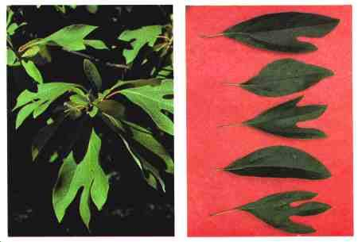
Sassafras
Sassafras albidum
Description: This shrub or small tree bears different leaves on the same plant. Some leaves will have one lobe, some two lobes, and some no lobes. The flowers, which appear in early spring, are small and yellow. The fruits are dark blue. The plant parts have a characteristics root beer smell.
Habitat and Distribution: Sassafras grows at the margins of roads and forests, usually in open, sunny areas. It is a common tree throughout eastern North America.
Edible Parts: The young twigs and leaves are edible fresh or dried. You can add dried young twigs and leaves to soups. Dig the underground portion, peel off the bark, and let it dry. Then boil it in water to prepare sassafras tea.
Other Uses: Shred the tender twigs for use as a toothbrush.

Saxaul
Haloxylon ammondendron
Description: The saxaul is found either as a small tree or as a large shrub with heavy, coarse wood and spongy, water-soaked bark. The branches of the young trees are vivid green and pendulous. The flowers are small and yellow.
Habitat and Distribution: The saxaul is found in desert and arid areas. It is found on the arid salt deserts of Central Asia, particularly in the Turkestan region and east of the Caspian Sea.
Edible Parts: The thick bark acts as a water storage organ. You can get drinking water by pressing quantities of the bark. This plant is an important some of water in the arid regions in which it grows.
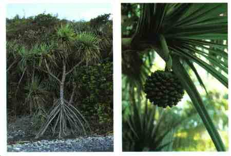
Screw pine
Pandanus species
Description: The screw pine is a strange plant on stilts, or prop roots, that support the plant above-ground so that it appears more or less suspended in midair. These plants are either shrubby or treelike, 3 to 9 meters tall, with stiff leaves having sawlike edges. The fruits are large, roughened balls resembling pineapples, but without the tuft of leaves at the end.
Habitat and Distribution: The screw pine is a tropical plant that grows in rain forests and semievergreen seasonal forests. It is found mainly along seashores, although certain kinds occur inland for some distance, from Madagascar to southern Asia and the islands of the southwestern Pacific. There are about 180 types.
Edible Parts: Knock the ripe fruit to the ground to separate the fruit segments from the hard outer covering. Chew the inner fleshy part. Cook fruit that is not fully ripe in an earth oven. Before cooking, wrap the whole fruit in banana leaves, breadfruit leaves, or any other suitable thick, leathery leaves. After cooking for about 2 hours, you can chew fruit segments like ripe fruit. Green fruit is inedible.
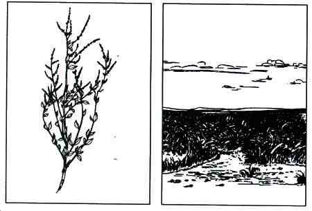
Sea orach
Atriplex halimus
Description: The sea orach is a sparingly branched herbaceous plant with small, graycolored leaves up to 2.5 centimeters long. Sea orach resembles Iamb's quarter, a common weed in most gardens in the United States. It produces its flowers in narrow, densely compacted spikes at the tips of its branches.
Habitat and Distribution: The sea orach is found in highly alkaline and salty areas along seashores from the Mediterranean countries to inland areas in North Africa and eastward to Turkey and central Siberia. Generally, it can be found in tropical scrub and thorn forests, steppes in temperate regions, and most desert scrub and waste areas.
Edible Parts: Its leaves are edible. In the areas where it grows, it has the healthy reputation of being one of the few native plants that can sustain man in times of want.

Sheep sorrel
Rumex acerosella
Description: These plants are seldom more than 30 centimeters tall. They have alternate leaves, often with arrowlike bases, very small flowers, and frequently reddish stems.
Habitat and Distribution: Look for these plants in old fields and other disturbed areas in North America and Europe.
Edible Parts: The plants are edible raw or cooked.
These plants contain oxalic acid that can be damaging if too many plants are eaten raw. Cooking seems to destroy the chemical.
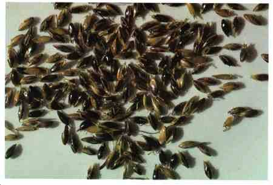